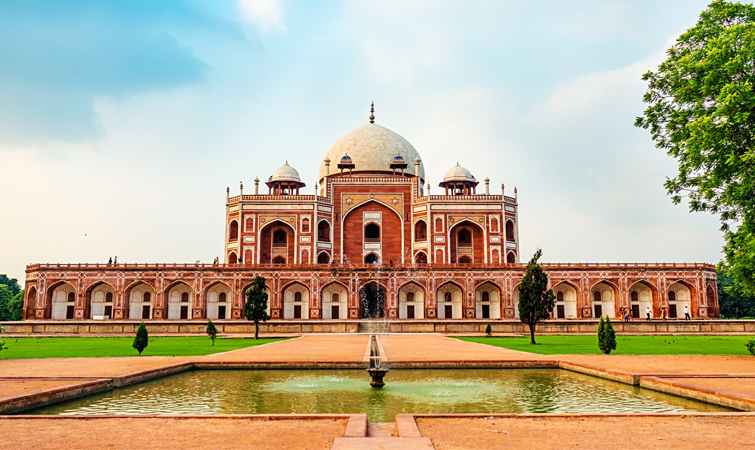
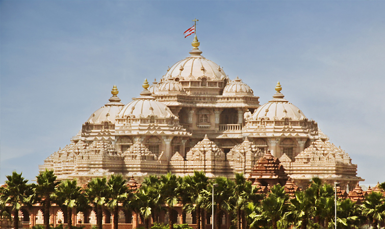
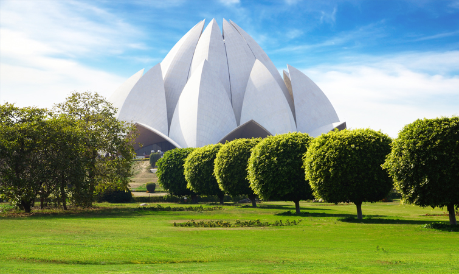
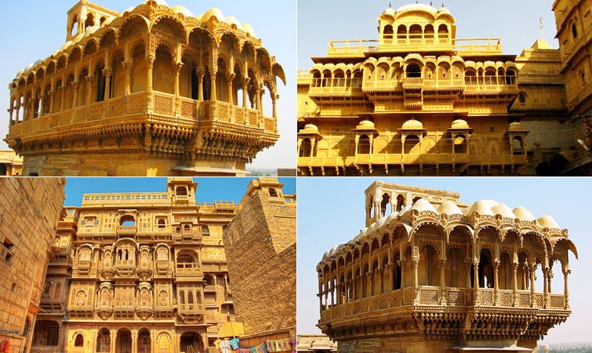
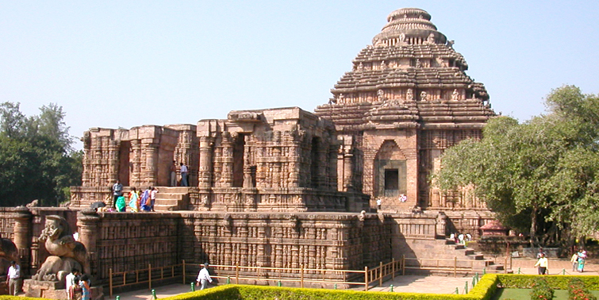

Taj Mahal
One of the seven wonders of the world, the epitome of love, the Taj Mahal is a huge mausoleum of white marble in the district of Agra in Uttar Pradesh, India. It is one of the most famous buildings around the world which is visited by millions of tourists from across the world every year. A witness to the great historical happenings of the Mughal Era, this construction was built by the Mughal King Shahjahan in memory of his beloved wife Mumtaz Mahal. Approx. 20,000 stone carvers, craftsperson, and artists were hired from different corners of the country along with artists from Iraq and Turkey. They worked for around 17 years at a stretch to give a shape to this wonder. This gorgeous heritage site is set amidst lush greenery and River Yamuna flows at the backdrop of this magnificent site. The main abode is set on a platform where minarets, arch-and-dome profile of pristine white marble and intricate designs mesmerize the tourists. The painstaking details on its walls, entrance, and roofs reflect the Pietra Dura form of art and give a detailed idea about the advancement of fine arts in Mughal-ruled India. Inlaid semi-precious stones are carved in Koranic verse on calligraphy and there is a prevailing belief that these are prayers written in Arabic language. On both side of the main mausoleum two red sandstone buildings looks as fine contrasting element. The building on the western side is a mosque while the other is a guesthouse of Mughal age.
HumayunTomb
After the death of Humayun, his eldest wife Bega Begam took initiative to build this tomb. In 1569, she employed Mirak Mirza Ghiyath, a Persian architect to build this wonderful monument. This red sandstone tomb is built ramidst a square garden divided into four main parterres known as charbagh. At the centre of this garden a shallow water-channel can be seen. There are two double-storeyed gateways on the west and south of the monument. The centre of the western wall is occupied by a baradari (pavilion) and a hammam( bathroom) is found at the centre of northern wall. The mausoleum is set on a high, wide and terraced platform. Across the sides small arched cells add to its architectural importance. It is designed like an asymmetrical octagon with four long and four short sides. A 42.5m high double dome is designed with marble and edged by exclusively carved chhatris (pillared kiosks). The interior is a spacious chamber which is octagonal in shape and set with domed roof compartments. The chamber is again interconnected with galleries and corridors. The entire structure is built with red sand stone with white and black inlaid marble borders..
Akshardham-temple
Acclaimed as the world’s second largest Hindu temple after the Akshardham Temple in Gandhinagar, Akshardham Temple in Delhi is a recent addition to the architectural gems of India. The temple was inaugurated on 6th November 2005 and it took 5 years and efforts of 11000 artisans for its massive construction to be completed. Akshardham Temple in Delhi is a part of the Bochasanwasi Shri Akshar Purushottam Swaminarayan Sanstha or BAPS. Made of pink stone and white marble, structure of Akshardham Temple consists of intricately carved pillars and domes decorated with stone statues and figurines depicting scenes from Indian mythology. The spectacular beauty and grandeur of Akshardham Temple is sure to leave you mesmerized..
Lotus-temple
Lotus Temple, also known as the Bahai Temple was constructed in 1986 to bring together different religious faiths on the same platform. The temple’s architecture reflects the shape of a half open Lotus flower. The structure is made of pure white marble and consists of 3 sets of 9 Lotus petals. Enclosed within these petals, is the meditation hall where followers of any faith can go and pray. Around the petals, you will notice 9 pools of water that look spectacular during night when colourful lights fall on the waters. The architecture and design of the Lotus Temple is worth appreciating the architectural skills of the Iranian-Canadian architect, Fariburz Sahba, who commemorated its design
Rajasthan-Havelis
Havelis of Rajasthan, built in Rajput and Islamic styles of architecture, are known for their distinct designs and exquisitely carved sandstone facades, latticed balconies and interior walls adorned with mural paintings. ‘Patwon ki Haveli’, ‘Nathmal ki Haveli’ and ‘Salim ki Haveli’ are worth visiting in Jaisalmer. Shekhawati is another region in Rajasthan that is worth including in your itinerary; ancient havelis of this place are a treat to eyes. If you are in Rajasthan, then a heritage tour of these havelis is a must
Sanchi
Sanchi is a small town famous for its oldest Buddhist monuments dating back to the Mauryan era between 3rd century BC and 12th century AD. Most significant of these monuments is the ‘Sanchi Stupa’ that was carved out of a semi-circular rock. The eye-catching design and architecture of the stupa displays an austere grandeur of its times. The 4 gateways to the stupa are adorned with exquisite carvings depicting the life of Lord Buddha.
Taj Mahal
One of the most visited tourist attractions in India, these caves boast of the glorious architectural splendours of the Buddhist monks in ancient India. Dating back to the Gupta period, the sculptures and paintings on the walls of the Ajanta & Ellora Caves depict incidents from the life of Lord Buddha, most interesting of which are the Jataka tales. The paintings in these caves are considered to be an epitome of artistic creativity and a tribute to the craftsmanship of the sculptors of the bygone era.
Sun Temple
Located on the shore of Bay of Bengal, Sun Temple-Konark is the main attraction of Konark tourism. It is situated in the Puri district of Orissa. The temple was constructed under the patronage of King Narasimhadeva I of Eastern Ganga Dynasty. It is dedicated to Sun God of Hindu mythology and resembles the shape of gigantic chariot fitted with giant wheels. Every nook and corner of the temple is carved with various stone sculpture depicting different identities and activities. The temple has 24 carved wheels divided into 12 pairs. To draw the chariot, seven giant stone horses are tied to it. The temple is designed with refined iconographical depictions of the life and activities of contemporary era. The space between the wheels and the plinth of the temple is adorned with the eclectic shapes of wonderful lions, dancer-musicians, and different postures of erotic groups. The temple is further divided into spatial units. The Vimana was surmounted by a tall tower with a shikhara(crowning cap). Though a major part of the temple is under ruin, yet the grandeur of the temple is highly praiseworthy and significant from tourists' point of view. The main entrance of the temple is constructed in such a manner that first rays of sunrise bathe it with all brightness. The audience hall of the temple is around 128 feet tall. Other significant structures found in temple premise are Nata Mandapa (dancing hall) and Bhoga Mandapa (dining hall).